Predaj dvojizbový byt, 48 m2, Stupava, Hlavná ulica
Stupava
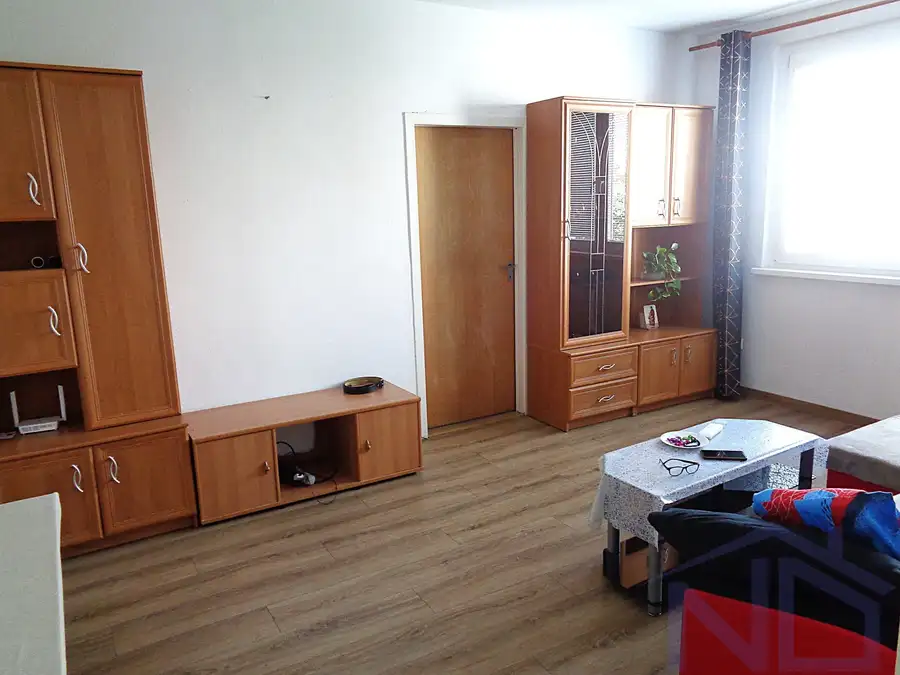
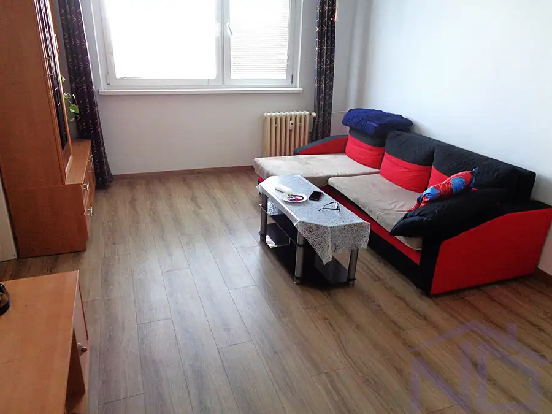
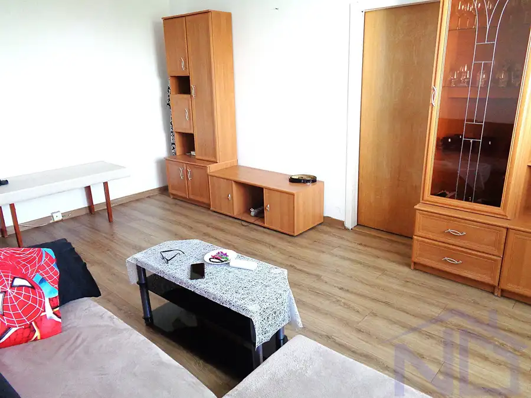
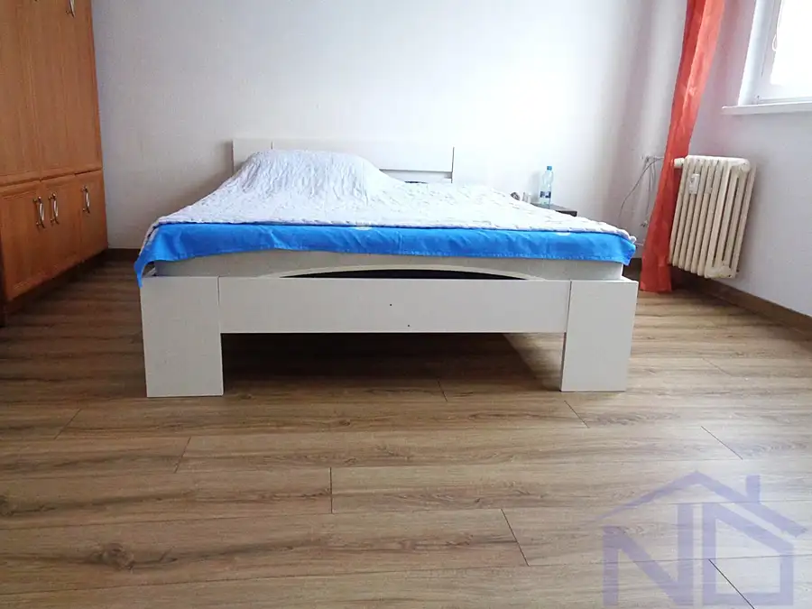
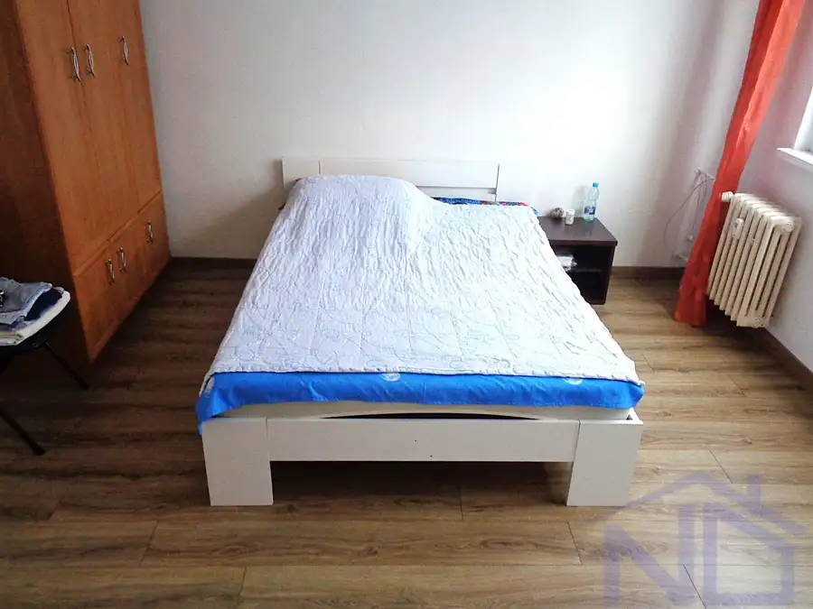
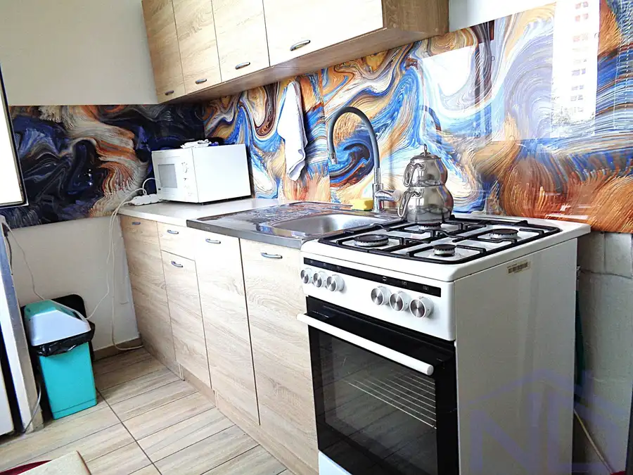
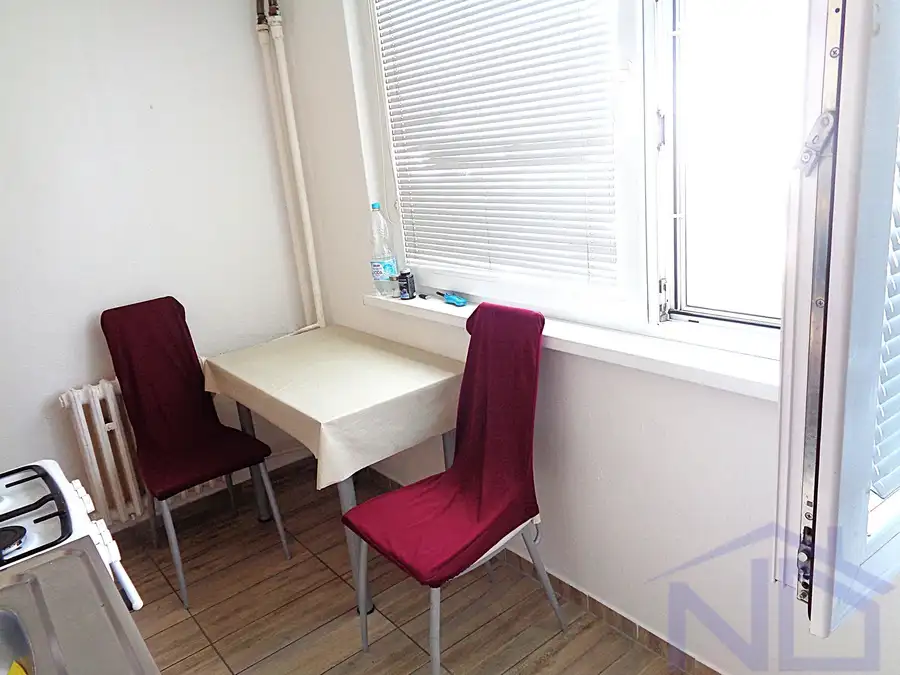
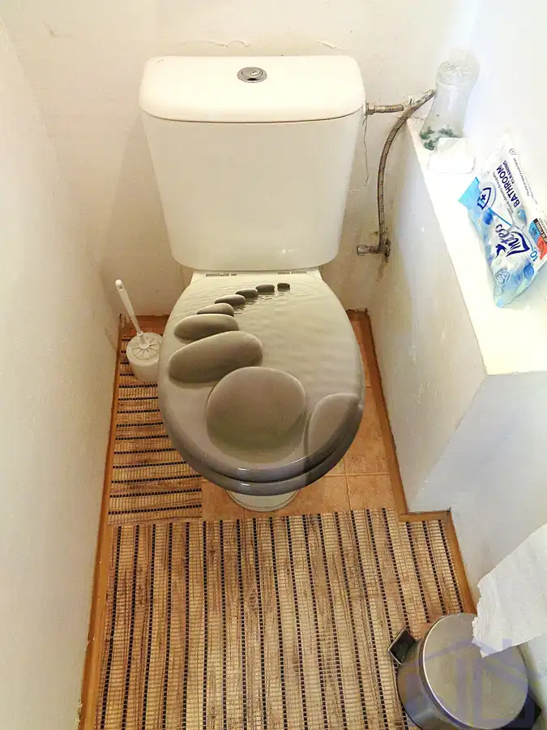
- Dispozícia2-izbový
- Plocha48 m²
- Poschodie4. z 8
- StavČiastočná rekonštrukcia
- VlastníctvoOsobné
- Energetická triedaA
O nehnuteľnosti
REZERVOVANÉ - predaj dvojizbový byt v centre Stupavy, na Hlavnej ulici, celková výmera bytu vrátane príslušenstva je 48,17 m2, k bytu prislúcha pivničná kobka umiestnená na prízemí domu 1,15 m2, k dispozícii je loggia na medziposchodí určená na sušenie bielizne spoločná so susedným bytom, štvrté poschodie z ôsmich, konštrukcia domu je panel. Dispozícia bytu sa nachádza v pôdoryse medzi fotkami.Orientácia bytu je na západ. Bytový dom, prešiel kompletnou rekonštrukciou: zateplenie, nové stúpačky, vchodové brány, nový výťah so strojovňou, vymenené okná na spoločných priestoroch, domový vrátnik.Byt je v udržiavanom stave, boli vymenené okná za plastové, s vnútornými žalúziami, na podlahách v byte je dlažba v kombinácii s laminátovými podlahami (v izbách), zánovná kuchynská linka, elektrická rúra s plynovou varnou doskou. Občianska vybavenosť v bezprostrednom okolí: škola, škôlky, detské ihriská, zdravotné stredisko, lekárne, obchody, BILLA, trh, pošta, mestský úrad, kostol, reštaurácie, zastávky SAD - všetko v dosahu pešou chôdzou pár minút. V širšom okolí zámocký mestský park, športový areál, cyklotrasy, možnosť turistiky, zelené okolie Karpát. Cena nehnuteľnosti: 152.000,- EURKONTAKT: 0948 045 130, Kamil Hýravý, kamil.hyravy@rknovydomov.sk
Parametre
- Cena vrátane energií
- Nie
- Druh
- 2 izbový byt
- Dátum zverejnenia
- 01. 09. 2026
- Energetický certifikát budovy
- A
- Orientácia
- Západná
- Podlažie
- 4
- Počet izieb / miestností
- 2
- Počet nadzemných podlaží
- 8
- Počet pivníc
- 1
- Počet spální
- 1
- Príprava teplej vody
- Súbežne s ÚK
- Stav nehnuteľnosti
- Čiastočná rekonštrukcia
- Telekomunikácie
- Internet, Optická sieť
- Typ
- Predaj
- Typ konštrukcie
- Panelová
- Vlastníctvo
- Osobné
- Vybavenie
- Pivnica, Verejné parkovanie, Výťah, Detské ihrisko
- Vykurovanie
- Ústredné
- Zdroj tepla
- Teplo z kotolne
- Úžitková plocha
- 48 m²
Kde to je


Mohlo by Vás zaujímať
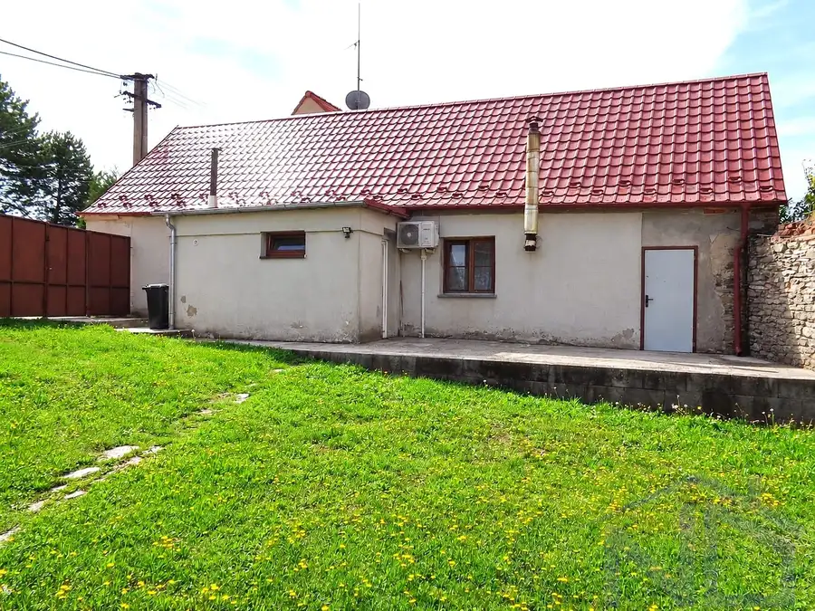
DomNové 460 000 €Predaj Rodinného domu s pozemkom, výmera pozemku 1336 m2, Bratislava - Záhorská Bystrica Záhorská Bystrica, Bratislava 110 m²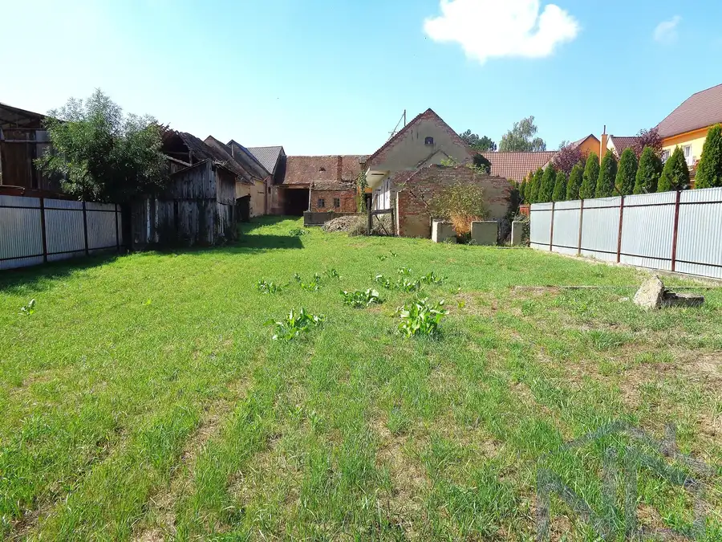
DomNové 194 400 €Rodinný dom a stavebný pozemok, výmera 1944 m2, Vysoká pri Morave Vysoká pri Morave 200 m²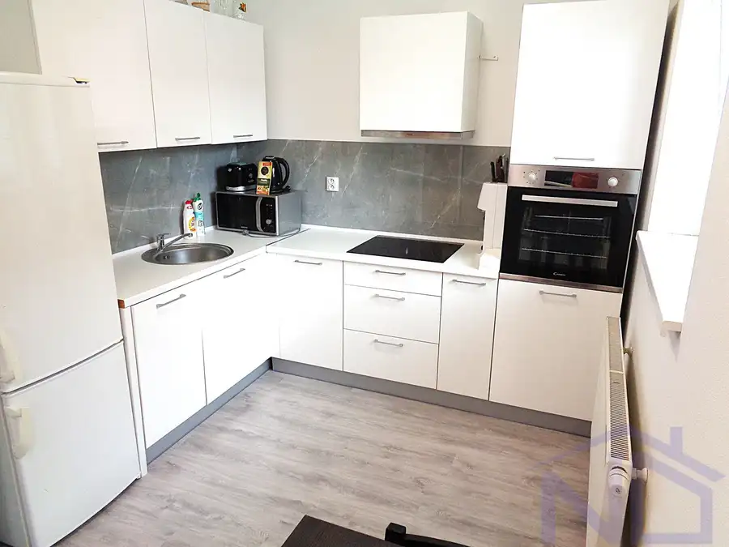
BytNové Cena na vyžádáníJednoizbový byt, 40 m2, Stupava, Cementárenská ul., zariadený, novostavba Stupava 1-izbový40 m²1. podlažie